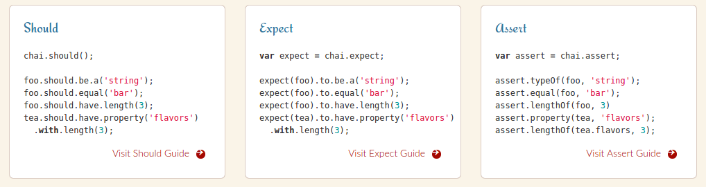

Ejemplo testing
(Nadie quiere cargarse lo que hay producción)
Germán Martínez Maldonado
(
GitHub: @germaaan /
Twitter: @germaaan_)
Oficina de Software Libre de la Universidad de Granada
(Twitter: @OSLUGR /
Facebook: @SoftwareLibreUGR)
Granada Geek
(http://www.meetup.com/es-ES/Granada-Geek/)


¿En qué consiste el testing?
En comprobar que una aplicación cumple con unos requisitos mínimos de calidad.
¿Cómo hago el testing?
Implementando diferentes tipos de pruebas que comprueben el comportamiento de nuestra aplicación a diferentes niveles.
¿Cómo hago el testing?
- Pruebas funcionales: comportamiento del sistema
- Pruebas no funcionales: cómo trabaja el sistema (rendimiento, carga, estrés...)
- Pruebas estructurales: miden el alcance de nuestro testing
Tipos de pruebas funcionales
- Pruebas unitarias: verifica el correcto funcionamiento por separado de una porción del código. Métodos "públicos" no triviales.
- Pruebas de integración: verifica que todas las porciones del código funcionan juntas como parte del sistema.
Tipos de pruebas estructurales
- Pruebas de cobertura: evalua cómo de completo es nuestro conjunto de pruebas en función del porcentaje de código comprobado.
¿Pero son necesarias las pruebas unitarias?
¿Por qué son necesarias las pruebas unitarias?
¿Por qué son necesarias las pruebas unitarias?
¿Por qué son necesarias las pruebas de integración?

¿Por qué son necesarias las pruebas de cobertura?
¿Qué puedo usar para hacer pruebas unitarias en Node.js?
Metodología de desarrollo de las pruebas
- TDD: Test-driven development o desarrollo guiado por pruebas
- BDD: Behavior-Driven Development o desarrollo guiado por comportamiento
¿Qué puedo usar para hacer pruebas unitarias en Node.js?
Seleccionar el framework:
- Jasmine: http://jasmine.github.io/
- Mocha: https://mochajs.org/
- QUnit: https://qunitjs.com/
¿Qué puedo usar para hacer pruebas unitarias en Node.js?
Seleccionar una librería (si es necesario):
- Chai: http://chaijs.com/
- Should: http://shouldjs.github.io/
¿Qué puedo usar para hacer pruebas unitarias en Node.js?
Seleccionar una librería (si es necesario):
¿Qué puedo usar para hacer pruebas unitarias en Node.js?
Seleccionar una librería (si es necesario):
- Supertest: https://github.com/visionmedia/supertest
¿Qué puedo usar para hacer pruebas de integración en Node.js (y otros lenguajes)?
- Travis: https://travis-ci.org/
- Jenkins: https://jenkins.io/
¿Qué puedo usar para hacer pruebas de cobertura?
- Blanket.js: http://blanketjs.org/
- Istanbul: https://github.com/gotwarlost/istanbul
- JSCover: https://tntim96.github.io/JSCover/